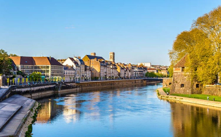
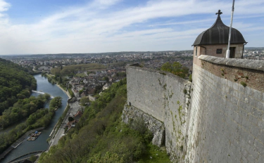

Parmi les villes, à l’échelle national, beaucoup sont celles qui commencent à réagir face au changement climatique en mettant en place de plus en plus d’infrastructure ou autre projet qui sont « environnement friendly » On peut citer comme ex, la ville de Paris qui met en avant l’utilisation du vélo par la création de piste cyclables favorisant donc le déplacement à vélo plutôt quand voiture et aussi afin de désengorger la ville de ses immenses embouteillages.
Parmi ses villes, l’une d’elle a retenu notre attention, c’est Besançon.

Besançon, c'est quoi ?
C’est la capitale du Doubs, un département de la région Bourgogne Franche-Comté anciennement la Franche-Comté seule. Besançon est une commune de 118 647 habitants, situé dans l’Est de la France. Elle est le siège de la région Bourgogne Franche-Comté. C’est aussi la capitale de la région historique et culturelle de Franche-Comté. Les habitants se prénomment les bisontins, « on est bisontin ou on ne l’est pas » c’est l’hymne qui rode entre les habitants.
On peut retrouver de nombreuses choses, notamment de grande salle de concert (La Rodia) ou encore des grands complexes d’expositions (Micropolis) ou sportifs (La Malcombe, Léo Lagrange)
Toutefois, si vous voulez visiter la ville, nous vous renvoyons vers le site web de Besançon :
https://www.besancon.fr/

La ville au coeur de l'évolution
L’évolution propre c’est l’une des politiques de la ville, cela provoque notamment un engagement important : environnement, biodiversité, énergie, climat, eau, déchets, mobilité…
De nombreuses idées & projets sont mis en place afin de montrer l’évolution propre aux autres villes On peut citer le commercer éco-engagé, le parcours écocitoyen mais aussi le développement durable des quartiers.
La ville met en place de nombreux moyens pour évoluer sans pour autant polluer plus ! Les gens ont compris les enjeux de leurs actions, parmi les choses mises en place, on retrouve les transports en communs. Des tramways, de nombreux bus ou encore des vélos sont mis en place dans la ville afin de réduire l’utilisation de la voiture et donc diminuer l’impact écologique.
Malheureusement, un trop grand nombre de villes ont tendance à laisser passer ce combat pour l’écologie, pour l’environnement, pour sauver la planète mais on retrouve quand même certaines villes qui fournissent des efforts et cela fait plaisir !

Frise des lieux similaires
Les différentes villes sont affichées ci-dessous sous forme de frise.

Pour plus d'informations,
Classements des villes vertes en France :
https://www.detoursenfrance.fr/patrimoine/patrimoine-urbain/le-classement-des-villes-vertes-en-france-8111
Article suivant : "Sauvez la planète"